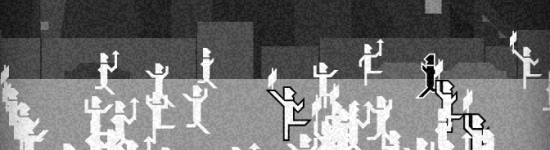
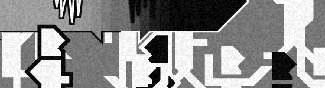
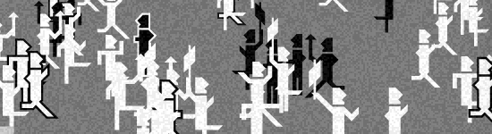
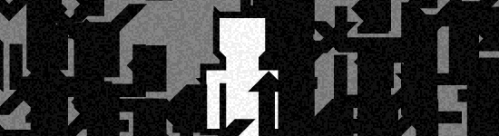
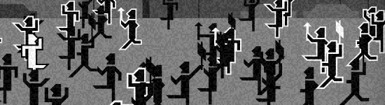
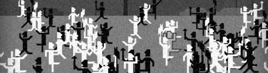

You play as a lone person trying to stem the tide of a riot. There is no context given - only black and white to indicate disagreeing opinions.
The game begins with you as a lone dissenter among a raging sea of "white" opinions. If you don't push against the tide, it carries you along with it.
The game states the goal as bringing as many people as possible to the side of peace. To do that entails entering abstract rhythm matching games for each rioter you attempt to convince. I found it simple but nuanced. Verbally shotgunning a rioter won't convince anybody - you have to wait; listen.
As your words spread through the crowd you gain more and more converts to your cause, but ultimately you find that swaying the opinions of the masses results in simply a mass reversal and more violence and rioting - your converts put down their placards and take up torches once again. You change colors again and again to promote peace, but the situation escalates nonetheless.
Finally you become gray, your words lose their impact. You can't convince anyone, because you yourself aren't convinced of anything anymore.



That's my take on it, at least. Kudos to Intuition.